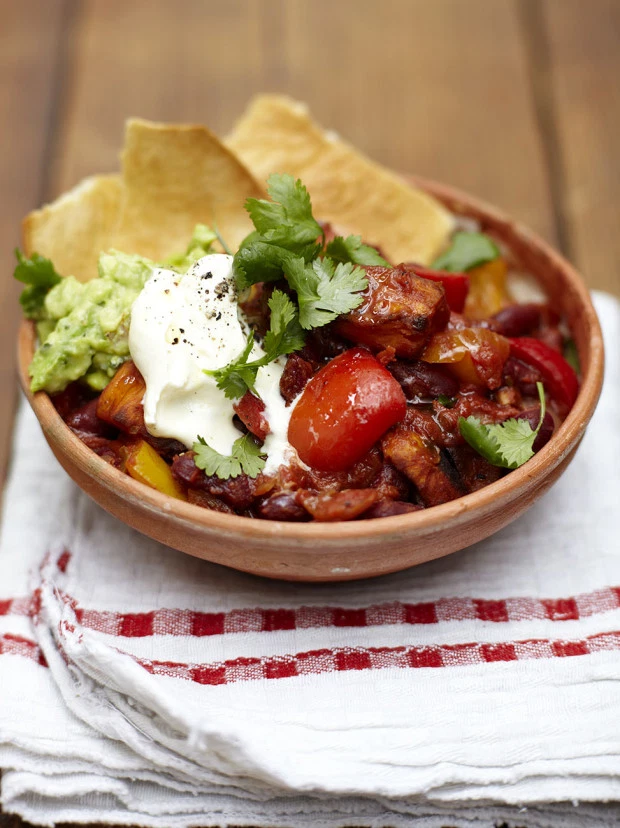

isoPlate
Dinner Recipes
Beat the Self Isolation blues by whipping up some of these tasty recipes with food stocked in the cupboards

Ingredients:
- 500g sweet potatoes
- 1 level tsp cayenne pepper, plus extra for sprinkling
- 1 heaped tsp ground cumin, plus extra for sprinkling
- 1 level tsp ground cinnamon, plus extra for sprinkling
- Olive oil
- 1 onion
- 2 mixed-colour peppers
- 1 bunch fresh coriander (30g)
- 2 garlic cloves
- 2 fresh mixed-colour chillies
- 2 x 400g tins beans, such as kidney, chickpea, pinto, cannellini
- 2 x 400g tins plum tomatoes
- Lime or lemon juice, or vinegar, to taste
Method
- Preheat the oven to 200C/400F/Gas 6. Peel and chop the sweet potatoes into bite-sized chunks, then place on to a baking tray.
- Sprinkle with a pinch each of cayenne, cumin, cinnamon, salt and black pepper, drizzle with oil then toss to coat. Roast for 45 minutes to 1 hour, or until golden and tender.
- Peel and roughly chop the onion. Halve, deseed and roughly chop the peppers, then peel and finely slice the garlic. Pick the coriander leaves, finely chopping the stalks. Deseed and finely chop the chillies.
- Meanwhile, put 2 tablespoons of oil in a large pan over a medium-high heat, then add the onion, peppers and garlic, and cook for 5 minutes, stirring regularly.
- Add the coriander stalks, chillies and spices and cook for a further 5 to 10 minutes, or until softened and starting to caramelise, stirring occasionally.
- Add the beans and the juice. Tip in the tomatoes, breaking them up with the back of a spoon, then stir well.
- Bring to the boil, then reduce the heat to medium-low and leave to tick away for 25 to 30 minutes, or until thickened and reduced – keep an eye on it and add a splash of water to loosen if needed.
- Stir the roasted sweet potato through the chilli with most of the coriander leaves, then taste and adjust the seasoning if needed.
- Finish with a squeeze of lime or lemon juice or a swig of vinegar to taste, then scatter over the remaining coriander.
- Delicious served with yoghurt or soured cream, guacamole and rice or tortilla chips.
- Cover loosely with foil and bake for 35-45 mins, removing the foil for the final 10 mins of cooking.